Literary prose
Feelings of the homeland; Khadija; Jidir Plain; Light; The pistachio tree; Forbidden; Whom am I greater than …; Son; I am not saying farewell; My mother's dolma
Literary prose stories
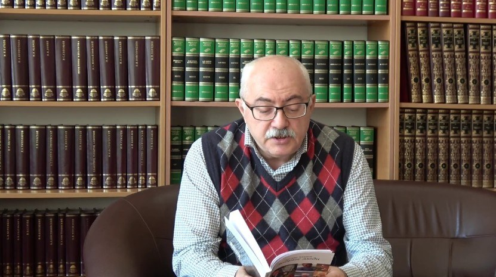
Feelings of the homeland; Khadija; Jidir Plain; Light; The pistachio tree; Forbidden; Whom am I greater than …; Son; I am not saying farewell; My mother's dolma

Our road to Khankendi and Shusha passed through the cities of Barda and Aghdam. Rather, we passed through the areas where the city of Aghdam once stood, and which were later wiped off the face of the earth by those who screamed for genocide from century to century. However, no damage was done to their own houses, not even a single crack can be found in the windows and walls of their houses.
Even after a year has passed, the houses of the residents who left their homes to their liking still look neat and untouched.
My companion was Akif Kadyrovich Alaferdov. His eyes were shining with joy, and he had a kind smile on his face. He waved the flag in his hand to the tune of the song sung by the people on the bus. Despite the many-hour journey from the capital of Azerbaijan to Khankadi and the cultural capital of our country, Shusha, the participants of the First Forum of Azerbaijani scientists living abroad, held two days ago, were in a good mood.
I want to say a few nice words about my travel companion. Teacher Akif was born into an Azerbaijani family who were forcibly relocated by the Soviet authorities to Kyrgyzstan, thousands of kilometers away from their native Azerbaijan. But, instead of getting angry, our compatriots who were forcibly displaced, lived with their lawful labors, raised their children in the spirit of respect for elders, their people and the people who helped them in the new place, provided them with bread and land.
Years passed. Now Akif Kadyrovich Alaferdov is a traumatologist who is well-known outside the borders of his country and has cured thousands of patients. It has trained a large number of qualified specialists.

He is an honored doctor of the Kyrgyz Republic, candidate of medical sciences. He is the author of many monographs, methodological recommendations, and scientific articles. Alaferdov is distinguished not only by achievements in the field of his specialty, but also by his extensive social activity. He is currently the president of the "Kyrgyzstan-Azerbaijan" friendship and cooperation society, the honorary president of the "Azeri" social association of Azerbaijanis living in Kyrgyzstan. At some moments of our journey, it seemed to me that Akif's wide, clear smile was spreading light on the roads of Karabakh, dear to all Azerbaijanis, despite his venerable age. He was smiling with a childlike smile, as if he was not in his eighth decade.
The girls dancing on the bus crossing, the song sung by Professor Masud, who came to Baku from the center of Europe, and the flags in the hands of our friends on the bus, created a unique atmosphere of happiness and enthusiasm during our journey. Together with teacher Akif, we used to vote for the songs of our youth.
Our hearts go out to Khankendi and Shusha. Yes, we live and create in different countries of the world, but we are still together. We love our Motherland not only yesterday and today, but always! It is this love that unites us.
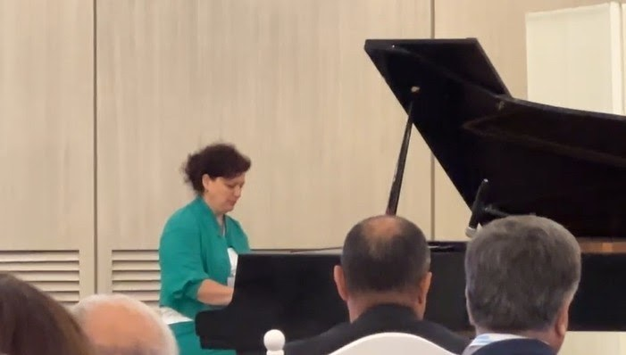
Khadija Zeynalova, Ay Lachin (video)
In the spacious hall, where separate words and voices easily meet and become a common echo, a closed space similar to a vibrating nervous system, the poyal stood quietly outside the stage, humbly but proudly waiting for its solemn hour, spreading its wings as if smiling.
One meeting of the World Forum of Azerbaijanis Living Abroad had just ended, while another was delayed and had not yet started. Unexpectedly, from among the crowd of conversing participants, a woman with black hair, in a chrysoprase-colored dress, with a graceful, cheerful figure, confidently sat down on a short, soft seat in front of the grand piano, which looked elegant in every sense of the word, and struck the keys of the grand piano as if kissing it with delicate fingers, and music began.
The "Ay Lachin" melody, which conquered the hearts of most of the people in the hall, was familiar to everyone from childhood and was loved for that reason. Lachin is a city in Azerbaijan that was looted and burned by the invaders in 1992, then liberated, and restored again in 2022, 30 years later. The woman speaking behind Royal was soon surrounded by photojournalists and photographers. They started pulling him from every position. And he continued as if there was no one around. Besides that and the grand piano...
Her name is Khadija Zeynalova. He is a well-known composer all over the world. He lives and creates in Germany. He participated in the Forum with a special invitation as the source of national pride of Azerbaijan and the wealth of the Azerbaijani people.

"This is the Jidir Plain. Dear to all of us, the native Jidir Plain. It is impossible to imagine Shusha without Jidir Plain, and Azerbaijan cannot be imagined without Shusha. We have returned to Shusha, we have returned to the Jidir Plain, and in the historical place from now on, the sound of mugham will be heard, Azerbaijani songs will be played, big events will be held, weddings will be celebrated..."
Ilham Aliyev
The road from Khankendi took our bus higher up to the top of the mountain on a serpentine, winding, winding road between the rocks covered with thick bushes. Every turn brought us closer to meeting Shusha. Thus, the roofs of the Khankendi buildings were completely down. Our travel buses were moving intermittently and non-stop. Some of the participants of the Forum of Azerbaijani scientists living abroad watched the road from the windows of the bus with impatience, some with obvious excitement, and some with interest. Despite all this, for most of us, Shusha appeared before us suddenly. The buses stopped at that moment and we all got off the buses near the hotel where lunch was prepared for us. Here, not only lunch was waiting for us, but also a meeting with the rector of Karabakh University, Shahin Bayramov, and the staff of the university headed by him. Remtor told us about the prospects of the university, about the eagerness of young people from Karabakh for the future, about hopes, projects with confidence, and confidence in future success. It can be said with certainty that the support of Azerbaijani scientists living abroad will contribute to the improvement of knowledge and skills of the students of Karabakh University. No one can doubt that.
We thanked the rector for the interesting conversation and finally headed towards the city. "Musicians and poets are closer to God than anyone else," Viktor Petrovich Astafyev, a genius Siberian writer who was at the front, often repeated. I had known him for many years and we had many meetings. He is the author not only of "Char-fish" and "Lake Vasyutkin", but also of the novel "The Cursed and the Killed", which contains the horrors of war.
Here I am standing next to three restored rare monuments - the monuments of the composer Uzeyir Hajibeyli, the poet Natava and the singer Bulbul, who sang love to all living beings until the last moments of their lives. They were born and raised in this native land, native city. Now restored, these monuments were brutally shot, disfigured and sent to the metal receiving station. Why did it happen? I know only one thing - those who destroy monuments to musicians and poets have no right to call themselves human...
I saw the ruins of Natava's and Hajibeyli's houses. No shells hit those houses. They were destroyed by thieves. I cannot call them a nation. Those who shoot down the monuments of poets and musicians, those who steal door and window frames, dishes and toilet bowls do not and cannot have a nationality.
I washed my face in the spring and went to Shisha's castle gate. Many of my colleagues had already passed by and were happily doing a photo session on the other side of the ancient fortress walls. I was far behind them with my diabetic legs. On the other hand, the surface of the ground in front of the door was so uneven and rocky that my walking speed was almost zero. It was very difficult to move my legs and keep my balance on the uneven rocky ground at the same time. Unexpectedly, someone's gentle and confident hand grabbed my elbow and started to support me. I did not know who or what this young woman was, but she saved me from unexpected mistakes, perhaps from falling on the stones that hundreds of thousands of people have found and smoothed over the years.
His help was gratuitous, out of compassion for me. We spoke with him in his native Azerbaijani language. I am Gulkhan (as she introduced herself) and I explained to the lady the metaphorical meaning of my life and my coming to Shusha, that this is not just a journey.
When our army attacked Shusha on November 20, I was in the hands of the police in Siberia. I had a pension card with my photo, first name, last name, date of birth, but no passport. The sergeant grabbed me and dragged me to the police station.
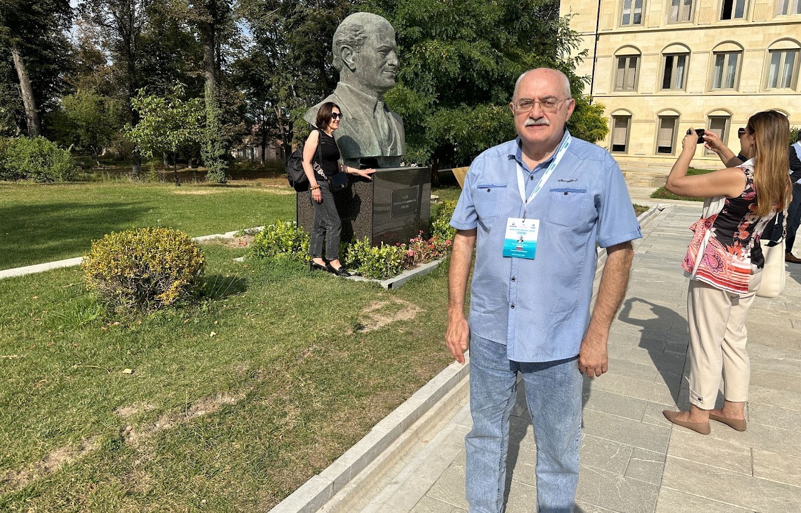
I later learned from the police report that his last name is Chonayan. I could not stand for a long time and stay in shoes. Despite this, Chonoyan and his colleagues conducted a check for several hours under the pretext of checking my identity in the database. They were telling me to describe myself as Russian. In other words, they promised to release me. And I stubbornly repeated that I was an Azerbaijani... Do you understand why I should give up my father and mother?! I am a Turk and I will remain a Turk. Even if they maim me...
Here, I am in Shusha for the first time in my life.
In the southern part of Shusha there is a plain called "Jidir plain". During the period of the Karabakh Khanate, a race of Karabakh horses was traditionally held here twice a year for hundreds of years. People traditionally celebrated Novruz and other holidays here. Horse sport "Chovken", which is considered the ancestor of today's horse-polo game, was also held here.

The vast mountain plateau became a favorite place for plein air artists in the nineteenth and twentieth centuries to create their works in the open air, with natural light, rather than in the studio. The mountain views from the plain of Jidir are truly unique. Music, literary and artistic festivals, fairs and holidays were held here. The "Kharibulbul" festival is held here from 1989 to 1991, and later from 2021 after the liberation of Shusha.
I told my dear Gulkhan about my secret and funny dream, which I have not revealed to anyone until now, when she took me by the arm and escorted me to the bus. This dream was to go up to the Cıdır plain plateau and walk there barefoot on the grass. Maybe my feet won't hurt like they have for the last four years. Of course, it is naive to think so, but where have you seen a poet who does not believe in miracles? My sister-in-law accompanied me to the bus and wished that my dream would come true. Soon the bus left. But my troubles did not end there. Before the bus reached the Cıdir plain, the driver said that the road was too steep for our vehicle and that we would have to walk from now on. Should I go or not? If it is about the fulfillment of my wish, then what does it mean not to go?! I went. The road was really very uphill for me at that point. I was still lagging behind everyone else. Even to climb a step or two, I often had to stop and lean against the low walls of the narrow sidewalk. I no longer followed the other travelers and only looked carefully at my feet.
Sweat was pouring out of my eyes, and there was no air in my lungs. Suddenly I came across a small flat area to the left of the seemingly endless uphill from my direction of travel. I returned to this relatively flat area. An architectural monument with the inscription "Vaqif" was raised in the distance. I realized that this is the alley of the recently restored mausoleum of the poet Vagif. Molla Panah Vagif was the first vizier of the Karabakh Khanate, a well-known political figure of Azerbaijan in the 18th century, and most importantly, one of the prominent poets of Azerbaijan, loved by the people. The alley allowed me to catch my breath. But I had to continue that way to the Cıdir plateau, or the others would turn back to the buses by the time I got to the top. This thought spurred me on, and I began to climb again. These were the hardest meters I have passed in recent years. There was a time when I could easily climb rocks, pass through the jungles of the Taiga, and easily pass through the swamps of the Tundra. Alas, my stroke and three shunts put in my heart do not allow me to repeat the "heroes" of the past expedition. Finally, my efforts paid off and his generosity showed. As soon as the Cıdır plateau opened before my eyes... I saw my former savior Gulkhan in front of me. We left here arm in arm again. You say he came here with a Land Rover driver, an unknown man. He asked him to help me climb the plateau. Apparently they got here before me as I moved at a turtle speed.

We went out to the pasture. I took off my shoes and socks and started walking barefoot along the Jıdir plain. The third toe on one of my feet was amputated back in the 20s. It was the first time that I had set foot on a land that I had never seen before, but for the sake of which I had shed my own blood, even if I did not depend on myself.
I was now walking along the Cıdır plain with a smile. I consider myself happy and have no regrets. At that time, I shouted to the whole world "Shusha, you are free!" I remember his words. These words still ring in my heart.
Gulkhanim left me alone and started filming the natural beauties and the slopes of the Cıdır plain. Maybe we won't meet Gulkhanim at the same time, but Shusha will remind me of Gulkhanim, Azerbaijan will remind me of my scholar brothers Masud, Bey Bakhtiyar, teacher Emil, teacher Akif and other representatives of my people. This is my native, benevolent, founder, creative, loving and forgiving people!
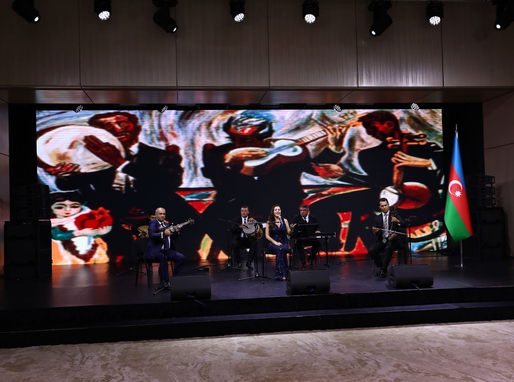
Every meeting, no matter how heartwarming, sad, or short-lived, ends in a goodbye. Thanks to the creator! Maybe they will say goodbye temporarily, maybe the goodbye will be postponed. This is exactly how our meeting ended. So, we, the participants of the First Forum of scientists living abroad, gathered early in the morning to go to Karabakh together. Our discussions, held in the hall of the hospitable "Gulustan" palace, ended with a farewell dinner and party.
Of course, we gathered around the big round table not only to prefer a delicious dish of ancient or modern Azerbaijani cuisine, but also primarily for communication, which people living on Earth sometimes need more in conditions that are not limited by time and the framework of scientific discussions.
As time goes by, when we remember someone who left us and moved to the world with no way back, we later regret that maybe God knows, only a kind look or a kind word was missing to stay with us for a while.
Our farewell party was most likely aimed at creating this solidarity, creating a joint society of people whose fates, histories, lands where they were born and grew up, and their love for the Motherland are the same.
Musicians with national musical instruments of Azerbaijan - tar, kamancha, tambourine and wind instruments appeared in front of those gathered for the farewell party on the low stage. Another beautiful woman was sitting in front. She was Ravana Gurbanova, soloist of Azerbaijan State Philharmonic and International Mugham Center. He was accompanied by his wife, professional musician, head of "Buta" ensemble Rovshan Gurbanov.
The performer began his performance with a mugham. In my world, mugham is the voice of our people from the past to the present day, tied with golden strings, which embodies the magnificence of the world and the harmony of the universe in front of human beings. There was a moment of silence in the hall, where many different people had gathered. Ravana's voice and musical sounds spread to the wide hall, similar to the sound of mountain springs that could not keep silent, and the singer, who excited the hearts of every listener (that's what the skilled mugham performers are called in our country).
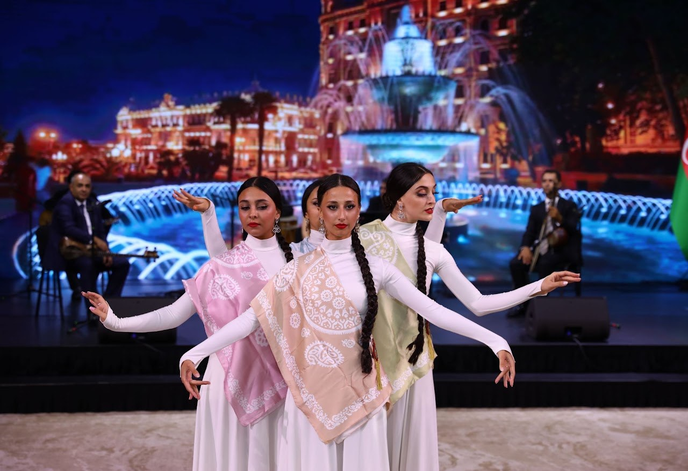
Later dance tunes and other modern songs were played. However, the first feelings from the mugham performance did not leave the listeners until the end. Many of the participants of the First Forum of Scholars Living Abroad gave a speech of appreciation.
When the festive evening was about to end, as the organizers had planned, when it became clear that the holiday would end in a few moments, all the Azerbaijani scientists got up with enthusiasm, joined hands, formed a big circle and started dancing "Yalli", which is considered an ancient Azerbaijani dance. This dance is reflected in the paintings carved on the stones of Gobustan. Once upon a time, the twelfth Roman legion wanted to pass through those places, but they couldn't, they got mixed up with the local population and stayed there. Only the name of Absheron's Ramani village (translated as Roman) remained as a memory of this. A bull's head is engraved on the coat of arms of Baku city. The bull's head was the symbolic symbol of the twelfth legion, created by Julius Caesar and named "Lightning-swift".
We did not let the musicians go. They played until our dance was over. By the way, Tur Kheyerdal, an outstanding scientist who traveled to Azerbaijan several times, proved that this dance is depicted in the pictures on the rocks of Gobustan. I think that our people also had ideas about it. Finally, I probably wasn't the only one who noticed the beaming faces of the Forum participants and their enthusiasm. I certainly understand where this light comes from. This is probably clear to you.

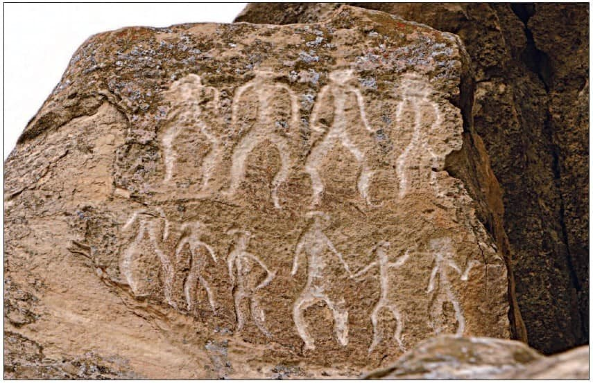

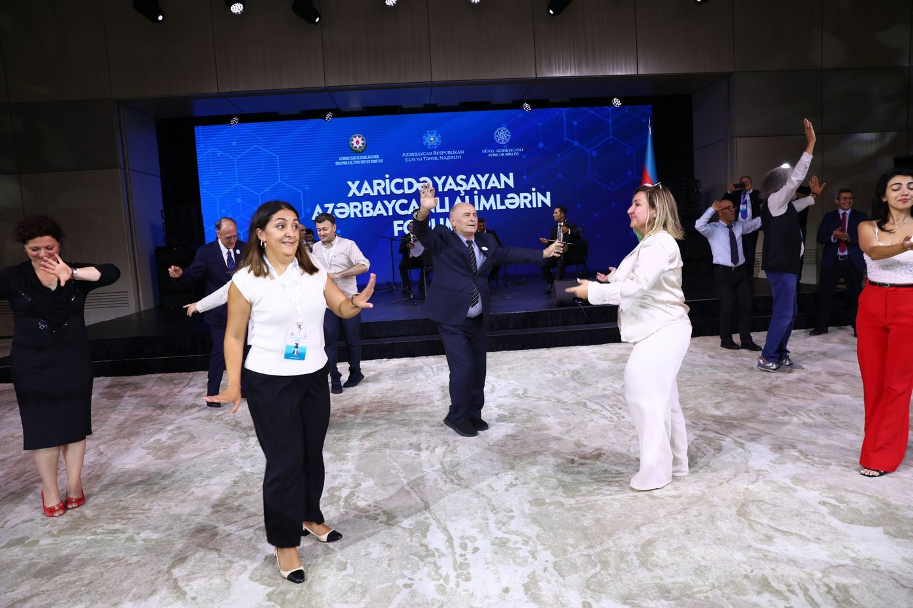


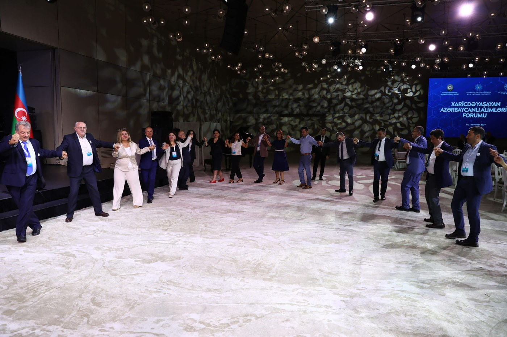

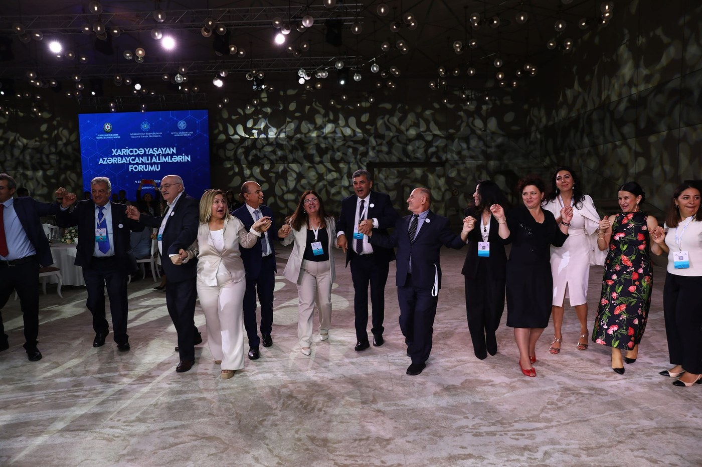
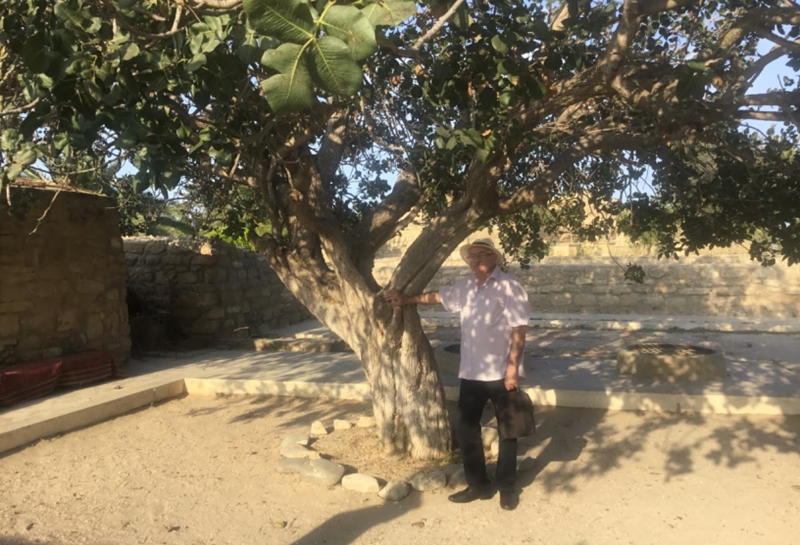

On a stony and dusty peninsula, surrounded by noisy sea waters, exposed to the sun's rays and wind, there is an ancient settlement called Gala. Over time, people lived there in houses built of fish ears, which became dull and hardened over time. Their houses have no windows. The light fell inside from the double chimneys called "dubla". Now, a myzey has been created here under the open sky. Between the houses, along the stone paths, tourists who show enthusiasm and interest in everything walk here, with the hot rays of the sun beating on their heads, mischievous children run around.
In one of the stone courtyards stands a lonely, living hazelnut tree. Its trunk is bumpy, and its bark is light gray in color. Its roots have worked deep into the earth.
...Peanut bars are still mentioned in the Bible. According to what was written, Tsaritsa Savskaya was very fond of pistachio nuts. But that's not the point. The tree may be hundreds of years old. I noticed the unusual smoothness of the trunk of the tree. It was as if it had been polished with something. This happens as a result of the touch of countless human hands. You know, there is such a belief in the Castle: whoever touches the trunk of this tree and holds a wish in his heart, this wish will surely come true. I touched. I closed my eyes. I kept what I wanted in my heart... I don't remember if it was China or not. But now I know exactly where the lucky tree grows and what its name is.

One day my poems saved me from being a slave. Maybe I would be more right if I say "my poems saved my life that day".
This event happened a long time ago at the foot of the Pamir mountains, in Tajikistan. The civil war had just ended here.
I crossed the Panj River and fell into the hands of mujahideen who were smuggling to Afghanistan. They were very happy to catch me. According to their translators, they were going to wrap me in a palaz and take me across the Moscow border in Panj and sell me as a slave in Kandahar at a high price.
I was helpless. What could I do? Nothing! I started reading my poems out of desperation. Of course, in Russian. Nobody understood a word except the translator. However, they saw that this was not a common spoken language.
The translator asked me to whom these poems belong. I said that these are my poems.
Suddenly, everything changed. Not only did they let me go, but they opened a big towel in front of me. They brought pilaf, tea and other oriental delicacies. Then they respectfully sent me to the place where I was before. For a long time I could not understand why these people suddenly changed their minds.
Later, while studying Lermontov's life and work, I came across a similar incident that happened to him in the Caucasus.
They say that legends live longer in the mountains. Longer than human life. Many people know that Lermontov was exiled to the Caucasus because of his heart-wrenching verses about Pushkin's death. They had sent him to the mountains, to the war, and they were sure that he would not return alive. Lermontov himself knew the purpose of this shipment. However, Lermontov did not bend even in the face of a bullet and, knowing that one day he would die from the bullet of an enemy soldier, he remained true to himself and his convictions.
Maybe that's why there are many poems dedicated to the inevitable death in battles in his work. Lermontov was a fatalist. When he always went to battle, he wore a red shirt and faced death like a fatalist. However, the mountain warriors know who the person in front of them is.
In the East, they are merciless against the enemy, but they especially respect poets. Special treatment is given to them because their voice is the true voice of the people.
Especially to the poets who suffered in the path of justice.
Lermontov rushed to the front of the battles, but he did not know that the leaders of his groups gave such an order to the fighters.
"Look, do you see that Russian officer in a red shirt? Don't shoot him. He is a poet!" Forbidden! - they shouted. And the shooters deliberately missed the bullet from Lermonto. Haram means "not possible", "forbidden", "sin before God". In the imagination of mountain people, Lermontov was in love. In the East, they call itinerant poets in love. Not a single bullet hit Mikhail Yuryevich in any battle or conflict. In the East, poets are not killed even in war. This is a wise eastern custom.
And it seems that this custom is still valid in some Afghan tribes. The one who touches the poet and the dervish is condemned to God's punishment!
It was this rule that saved me during the meeting with the Mujahideen. It is forbidden to touch poets!
By the way, this is exactly what Muammar Gaddafi repeated to his torturers before his death. However, no one heard him. Either times have changed in Libya and past customs have been forgotten, or Gaddafi was not accepted as a poet...
Translated from Russian by Təranə Məmməd

Perhaps, for some, things looked different, or could look completely different. But, for me, it was exactly like that. Everyone understands the truth as he understands it, he thinks that this point of view is the only correct one. No one can take away this right from him. Anything can happen. We are all different... But I can't forget the moments that a woman who I don't know personally shared with me on Facebook...
January 1990. Baku. The shooting that happened on the night of January 20 has just calmed down. This woman's brother was in Mockvada. She is very worried that no matter how hard she tries, she cannot call her sister. The information he can get is exciting and contradictory. Finally, she is able to call her sister, she asks her not to go out on the street, because it is dangerous, people have died, a curfew has been imposed in the city, soldiers and tanks are standing everywhere. Maybe there's still a fire going on somewhere... He's excited. It can be understood. Anyway, he's a brother. The words he heard from this gentle woman-sister left him stunned: "We cannot sit at home at this moment! We will go to bury the martyrs with the whole family!" His brother begs him not to do so: "What if they suddenly kill you?! Then how will I live?!" And he says to his brother: "Who am I more than... What am I more than yesterday's martyrs?!"
The woman gets dressed and goes out to the square...
"Who am I more than..." They used to say that in every Bakuli's home and family. I bow before the bravery of the people of Baku!
THE WHOLE CITY came to the square!..
Everyone has their own name and surname. Like everyone else, I have my first name, surname and father's name. But, since I am an Azerbaijani, my father's name (otchestvo - Russian) consists of two words: the first is my father's name, the second is "son", that is, when translated into Russian, it is "syn". Since there are no suffixes "ovich" or "ovna" in the Azerbaijani language, in documents drawn up in Russian, either "son" (syn) or "daughter" (doch) is written. At first glance, there is nothing unusual. But, let's take into account that I have been living in Russia for more than a quarter of a century, and here this situation is not welcomed by everyone in the same way. I was facing some difficulties at work, even if it was minor. There were even those who called "churka" behind my back. But they could not tell face to face. They were ashamed, because I spoke Russian better than some of them, wrote it better, and understood it better. That's why they were ashamed. I always take my passport with me when I go out. In fact, I have never had a problem anywhere except in Moscow. Even in the capital, I could drive without being noticed. They stopped me several times and checked my documents. But, because I am not an "ovich" but an "ogli" one could feel doubt from their eyes. This caused a feeling of concern. It's like I've done something bad and I'm trying to hide it.
Those were the exciting nineties, when arbitrariness reigned. That's why my wife, who is Russian by nationality, once gave me the following advice: "What do you need this "son" of yours? You already live in Russia, speak Russian, think Russian. Go to the passport office, change your father's name. What if you pay the fee, you will become Aleksandrovich or Alekseyevich, like the director Ryazanov. What difference does it make? Our children will not be ridiculed by their friends at school." I thought a lot. I took out the envelope in which I kept the pictures of my father, mother, and sisters. Meanwhile, the old "Baku" newspaper, published in January of the nineties, came out of the envelope together with the pictures.
The newspaper showed a city square on the seashore covered with a countless sea of people...
The city is under curfew. Tanks, armored personnel carriers, machine guns, thousands of armed soldiers on the streets. Gathering of more than three people is prohibited. But the people appeared. The people were not afraid of death or imprisonment. Once the poet Galich used to sing:
"Get out, you get out,
You can do it.
It's time, everyone ready?!
Regiments in squares,
Standing and waiting for orders..."
Namely, the regiments actually stood and waited for the order. Military helicopters were circling above the square. Despite all this, simple, unarmed people - Baku residents and people from other regions - flocked to this square. No one could stop them! No soldiers, no machine guns, no tanks. They were coming to bury their children who were killed by soldiers on the night of January 20. The oblong rectangles in the picture are the bodies of martyrs. I don't know their names. Hundreds of killed young people, old people, teenagers, girls, children, old people... Each of them had a name, a surname, a father's name. I don't know what their fathers' names were, but wherever I am, I will never forget the words that came after that.
I am a son! I am the son of my father and mother. It has been and will be. Let whoever gets in my way - Nazis, skinheads, skulls, it doesn't matter. I will remain as I was born in Baku!
I left Baku on June 11. But Baku stayed with me. With all my dreams and my heart, I am still in the Fountain Square, on Torgovy Street, in the alleys of the old city, near the Palace of the Shirvanshahs, on the boulevard, in the Alley of Martyrs...
The waves of the Caspian sea are constantly caressing my feet. Caressing Khazri rolls my shirt between me. It was as if the old Fox in the country house was waiting for me, circling in front of the open green gate, clinking and clinking. I'm still in those places...
This book is not a book of farewell to you, but my native Baku, my legendary Zurbahan, my city of Winds, the city of the blue-sky-eyed autumn Creator. I'm not saying goodbye to you, Bakhtiyar, I'm not saying goodbye to you, Basti, you are my childhood neighbors - a great scientist and a great actress! I won't say goodbye to you until I see Montin's yard, filled with the joyful sound of children, where slightly older children enthusiastically chase a soft ball noisily under the olive trees...
My younger sister Naila and my father Alikhas teacher are sleeping under the tombstones in Surakhani, a little distance from the Ateshgah temple. I am not saying goodbye to you, my dears. Wherever I am, you are with me.
I am not saying goodbye to you, my relatives and friends from Sabirabad, Ulacal, Baku, who have left this world and are still alive. Wherever I am, you are in my heart - Baybala and Nigar, Shawkat and Nizam, Alimohammed and Nazim, Khairulla, Jamila and Bilal...
I'm not saying goodbye.
Of course, I can never leave my sister Shafiga and my mother Saniya. You are the breath of my life for me, you are the most valuable people on earth for me.
I'm not saying goodbye. I am here. I am always with you...
Your Eldar
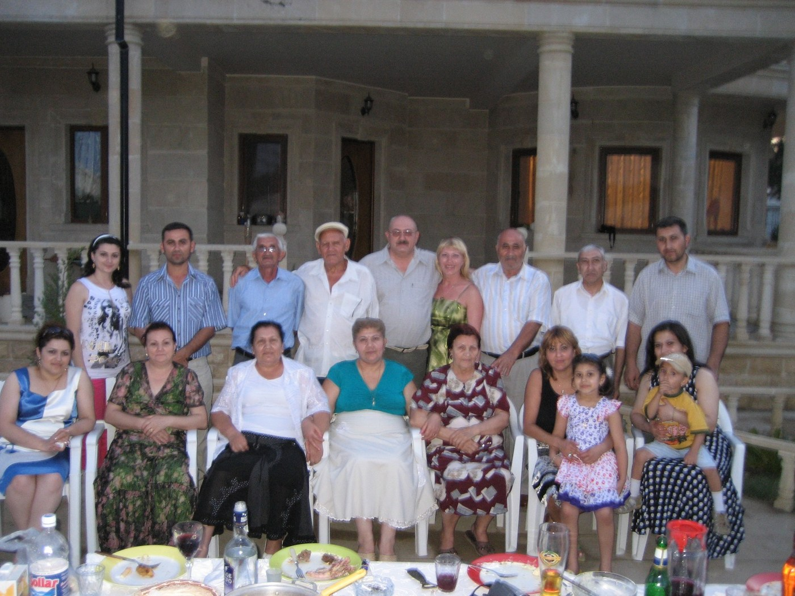

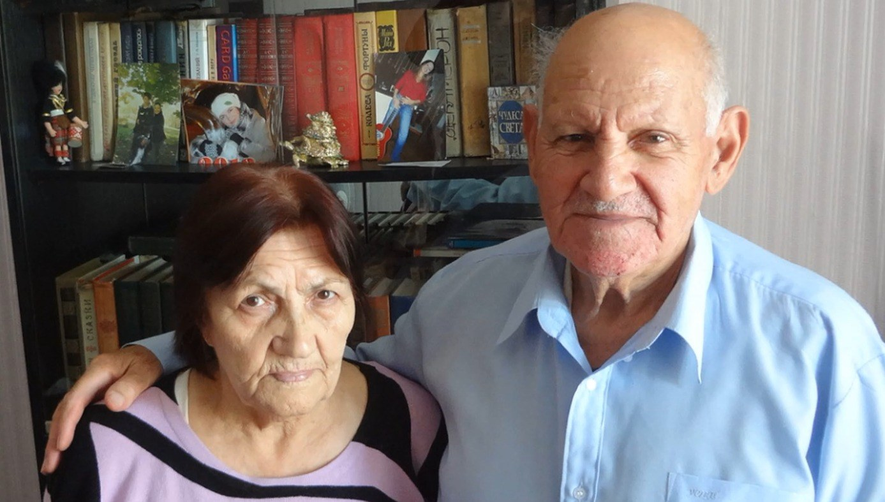

The most delicious food in the world is my mother's dolma. No one can prepare it like my mother or better than her, because it requires my mother's hands and my heart's desire. So, let's move on to the usual dolma, which everyone, even me, can prepare. What do you need for this? First, fresh grape leaves. My mother wrapped grape leaves like this, filled plastic bottles to the brim, then sealed them and sent them to me. To open them, I first place the leaves in a pot and pour hot water from the coffee pot over them. So it is easy to open them. If fresh grape leaves are not in season, then you can use leaves preserved in marinade (i.e. in acetic acid). If you have a market in your city, they must be there.
It is better if you choose the meat yourself and prepare the mat yourself. I didn't have the patience or time for that, so I bought a ready-made, lean beef mat. It looks like new. I don't like greasy dolman. Maybe someone likes fat, but it's not me. The taste of fat loses all flavor. That's why even stuffing doesn't interest me when it's fat. Although a long time ago, when I was in school, my mother told me: "Son, it seems to me that even if I cook dolma 365 days a year, you will eat it in peace and not want anything else."

This is the truth. My mother knows how much I love the dolman she cooks, exactly what she cooks.
You need to add some rice to the meat. I notice it. But it seems to have worked out well. The rice should be whole rice, not groats, not the other way around, so that the rice in the dolman can be separated from the rice, as in the pilaf, and not get a lumpy mass. Then we add finely chopped onion, mint or basil (if available, both). Of course, ground black pepper and ordinary table salt are also in their place. We wrap the finished dough in grape leaves and raw dolma is obtained. At the bottom of the pot, we put two or three pieces of meat with bones in advance. Since I made dolma from beef, the bones should be beef bones. Then stuffing is arranged on top.

When the stuffing is ready, I make a yogurt and garlic sauce. For this, I add crushed garlic to the yogurt according to my taste and mix it so that it dissolves well. That's it. Dolman can be eaten by adding sauce on top. That's what I did today. Every time I eat dolman, I remember all kinds of delicious and fragrant dishes my mother used to prepare - kufta-bozbas with whole dried black plums, large meatballs with large peas, pilaf with meat, chestnuts, fried pilaf, fried vegetable pilaf, stuffed cabbage, cool dovga made from greens, piti, dhupera, levangi, mainly kutum-levangi and finally, sweets.
Oh my god! Unfortunately, I can't eat these sweets. From simple lab-labi (a mixture of walnut kernels and raisins), to keta, shakerbura, baklava, even shor-gogal. Since it's salty, I can probably eat a little bit of the shar-gogal. And then I turn on the music.
"Burnt cream" air is playing because I have loved this air since childhood. I listen and feel sad. Why am I always sad in my warm place? I don't know myself. Maybe because I can't cook dolma like my mom? No, it's not like that. So why? I won't say. I just don't want to say. This is about me. Sorry!..